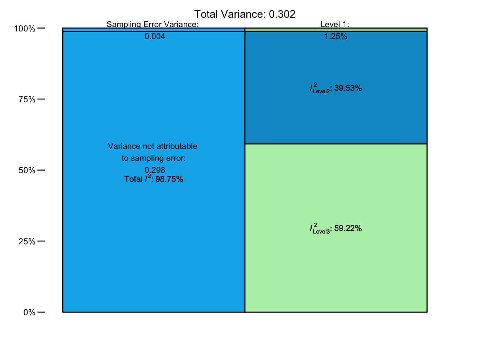

# Wees er zeker van dat het pakket is geïnstalleerd
library(metafor)Introductie
Op dit moment begeleid ik een groep studenten bij het opstellen en afronden van hun masterthesis. Daarvoor moeten ze een meta-analyse uitvoeren over de relatie tussen ingrijpende jeugdervaring (Adversed Childhood Experiences (ACE’s)) en opvoeden. Mij is gevraagd toe te werken naar een multilevel meta-analyse met moderatoren, een methode waarbij rekening wordt gehouden met de afhankelijkheid van effect sizes (zie bv. Assink, Wibbelink, et al. 2016) en de invloed van enkele onafhankelijke variabelen op de resultaten wordt meegenomen. Voor mijzelf was hierbij het hoofdstuk “Multilevel” meta-analyse uit het boek Doing Meta-Analysis in R van Harrer, Cuijpers, Furukawa, and Ebert (2021) zeer inzichtelijk.
In dit hoofdstuk wordt gebruik gemaakt van de dataset uit de Chernobyl-studie van Møller en Mousseau (2015). In deze maatschappelijk zeer relevante studie wordt het effect van de straling die vrijkwam bij de Chernobyl ramp van 26 april 1986 op het aanpassingsniveau van diverse soorten onderzocht. Hiervoor werden 45 relevante studies betrokken die over in totaal 30 soorten onderzochten. Het overall effect van die straling op het aanpassingsniveau van de soorten was heel groot (\(E\)=0.67; 95% CI: 0.59-0.73), waarbij het 44,3% van de totale variantie wegnam in een ongestructureerd random-effect model. Er bleek veel overlap tussen de soorten te zijn en de tijd veranderde de grootte van de effecten niet significant.
Omdat het zo behulpzaam was heb ik het vertaald en bewerkt, waarbij een van de gepresenteerde methodes worden gebruikt (in het boek worden ook alternatieven geboden). De komende tijd zal ik het hele boek van Harrer et al. als een notitieboek opzetten. Dit hoofdstuk is een aanzet daarvoor met een of twee maanden zal het als blog hierverschijnen. Elk hoofdstuk wordt dan, net als dit hoofdstuk, verdeeld in enkele theoretische notities en een praktisch deel waarin getoond wordt hoe het werkt in R.
Theorie
Als mensen het over multilevel meta-analyse hebben, denken ze aan meta-analyse modellen op drie niveaus. In Doing meta-analysis with R beschrijven Harrer et al. waarom meta-analyse van nature al een multilevel structuur van de data heeft en laten ze zien hoe zo’n conventionele meta-analyse kan worden uitbreid naar een model op drie niveaus. Aan de hand van een praktijkvoorbeeld laten ze het zien hoe het werkt in R.
Ze gaan eerst terug naar de random-effects model formule die ons bekend is: Deze formule beschrijft dus eigenlijk al een multilevelstructuur van meta-analysegegevens. Om dit duidelijker te maken, wordt de vergelijking opgesplitst in twee formules, waarbij elke formule correspondeert met een van de twee niveaus. Als we dit doen, krijgen we het volgende resultaat:
Niveau 1 (participanten) model:
\[\hat\theta_k = \theta_k + \epsilon_k\]
Niveau 2 (studies) model:
\[\theta_k = \mu + \zeta_k\]
Dit oude-vertrouwde meta-analysemodel heeft de multilevel-eigenschap “ingebouwd”. Het heeft namelijk deze eigenschap omdat we aannemen dat deelnemers geclusterd zijn binnen studies in onze data. Het is nu mogelijk om deze twee-niveausstructuur verder uit te breiden om bepaalde mechanismen, die onze data hebben gegenereerd, beter vast te leggen. Dit is waar drie-niveaumodellen om de hoek komen kijken (Cheung 2014; Assink, Wibbelink, et al. 2016).
Modellen met drie niveaus kunnen worden gebruikt voor afhankelijke effectgroottes. Wanneer een bepaalde studie bijvoorbeeld meer dan één effect sizes omvat, kunnen we er meestal niet vanuit gaan dat deze verschillende resultaten onafhankelijk zijn. Een drie niveaumodel ondervangt dit probleem door aan te nemen dat effect sizes geclusterd zijn binnen grotere clusters (in dit geval bijvoorbeeld studies).
Die model met drie niveau’s ziet er als volgt uit:

Het is mogelijk om de formule van dit model met drie lagen op te schrijven met dezelfde formules die we hierboven gebruikten. Het grootste verschil is dat we nu drie formules moeten definiëren in plaats van twee:
Level 1 model:(participanten)
\[\hat\theta_{ij} = \theta_{ij} + \epsilon_{ij}\]
Level 2 model:(binnen studies)
\[\theta_{ij} = \kappa_{j} + \zeta_{(2)ij}\]
Level 3 model:(tussen studies)
\[\kappa_{j} = \mu + \zeta_{(3)j}\]
Waarbij \(\hat\theta_{ij}\) een schatting is van de ware effectgrootte \(\theta_{ij}\). De term \(ij\) kan worden gelezen als “een effect size” \(i\) geclusterd in cluster \(j\)“. De parameter \(\kappa_{j}\) is de gemiddelde effect size in cluster \(j\), en \(\mu\) het totale gemiddelde populatie-effect. Net als voorheen kunnen we deze formules samenvoegen en zo de formule reduceren tot één regel:
\[\hat\theta_{ij} = \mu + \zeta_{(2)ij} + \zeta_{(3)j} + \epsilon_{ij}\]
In tegenstelling tot de conventionele meta-analyse (random-effects models) schatten modellen met drie niveau’s twee heterogeniteitsvarianties: de random-effectvariantie binnen clusters en de heterogeniteitsvariantie tussen clusters (de clusters zijn in dit geval studies). Het is ook mogelijk om categorische of continue voorspellers te testen met een model met drie niveaus. Dit resulteert in een mixed-effects model met drie niveaus.
Het boek bespreekt overigens ook andere methodes om met het geclusterde karakter van de data om te gaan (geCorreleerde en Hierarchisch Effenten model (CHE) en Robust Variance Estimation (RVE) modellen). Deze methodes worden echter hier niet verder uitgewerkt .
Praktijk
Voorbereiding
Het {metafor} pakket is heel geschikt om meta-analyse op drie niveau’s uit te voeren. Het gebruikt ‘(restricted) maximum likelihood’ (REML-) procedures als default om dat te doen.
We moeten eerst de biblitheek hiervan openen.
Voor hier gebruiken we de Chernobyl data set (gebaseerd op de studie van Möller en Mousseau, 2015). Die dataset is deel van het dmetar pakket waar meer datasets voor meta-analyse in zitten. Laten we dmetar en de dataset laden. Laten we meteen ook tidyverse laden, omdat we dat later nodig hebben voor databewerking.
# Wees er zeker van dat het pakket is geïnstalleerd
library(dmetar)
library(tidyverse)
data(Chernobyl)Laten we eens zien hoe de Chernobyl dataset eruit ziet.
head(Chernobyl) author cor n z se.z var.z
1 Aghajanyan & Suskov (2009) 0.2061 91 0.2090949 0.10660036 0.011363636
2 Aghajanyan & Suskov (2009) 0.2687 91 0.2754621 0.10660036 0.011363636
3 Aghajanyan & Suskov (2009) 0.2049 92 0.2078420 0.10599979 0.011235955
4 Aghajanyan & Suskov (2009) 0.2672 92 0.2738461 0.10599979 0.011235955
5 Alexanin et al. (2010) 0.9317 559 1.6711230 0.04240945 0.001798561
6 Alexanin et al. (2010) 0.4429 559 0.4758327 0.04240945 0.001798561
radiation es.id
1 low id_1
2 low id_2
3 low id_3
4 low id_4
5 low id_5
6 low id_6glimpse(Chernobyl)Rows: 33
Columns: 8
$ author <chr> "Aghajanyan & Suskov (2009)", "Aghajanyan & Suskov (2009)", …
$ cor <dbl> 0.2061, 0.2687, 0.2049, 0.2672, 0.9317, 0.4429, 0.8996, 0.95…
$ n <dbl> 91, 91, 92, 92, 559, 559, 559, 559, 559, 559, 560, 15, 79, 9…
$ z <dbl> 0.20909489, 0.27546213, 0.20784198, 0.27384610, 1.67112298, …
$ se.z <dbl> 0.10660036, 0.10660036, 0.10599979, 0.10599979, 0.04240945, …
$ var.z <dbl> 0.011363636, 0.011363636, 0.011235955, 0.011235955, 0.001798…
$ radiation <chr> "low", "low", "low", "low", "low", "low", "low", "low", "low…
$ es.id <chr> "id_1", "id_2", "id_3", "id_4", "id_5", "id_6", "id_7", "id_…De data set omvat acht kolommen (variabelen) en 33 rijen (studies). De eerste, author, geeft de naam van het onderzoek weer. De kolom cor toont de (niet-getransformeerde) correlatie tussen stralingsblootstelling en mutatiepercentages, terwijl n staat voor de steekproefgrootte. De kolommen z, se.z, en var.z zijn de Fisher-\(z\) getransformeerde correlaties, evenals hun standaardfout en variantie. De kolom radiation dient als moderator, die effectgroottes verdeelt in twee subgroepen, één met een lage en één met hoge totale stralingsblootstelling. De kolom es.id bevat eenvoudigweg een unieke ID voor elke effectgrootte (d.w.z. elke rij in ons dataframe).
Een eigenaardigheid aan deze dataset is dat er herhaalde (geclusterde) vermeldingen in de kolom author staan. Dit komt doordat de meeste studies in deze meta-analyse meer dan één waargenomen effectgrootte hebben bijgedragen. Als we naar deze structuur kijken, is het duidelijk dat effectgroottes in onze dataset niet onafhankelijk zijn. Ze volgen een geclusterde structuur, waarbij verschillende effectgroottes geclusterd zijn in één studie. Het zou dus een goed idee kunnen zijn om een meta-analyse op drie niveaus uit te voeren om deze afhankelijkheden in onze gegevens adequaat te modelleren.
Het fitten van een drie niveau ma-model
Een meta-analysemodel met drie niveaus kan worden uitgevoerd met de functie rma.mv in {metafor}. Hieronder vind je een lijst van de belangrijkste argumenten voor deze functie en hoe ze gespecificeerd moeten worden:
yi. De naam van de kolom in onze dataset die de berekende effectgroottes bevat. In ons voorbeeld is ditz, omdat Fisher-\(z\) getransformeerde correlaties betere wiskundige eigenschappen hebben dan “niet-getransformeerde” correlaties.V. De naam van de kolom in onze gegevensverzameling is die de variantie van de berekende effectgroottes bevat. In ons geval is ditvar.z. Het is ook mogelijk om de gekwadrateerde standaardfout van de effectgrootte te gebruiken, aangezien \(SE^2_k=vk\).s.lab. De naam van de kolom in onze dataset die de studielabels bevat.data. De naam van de data set.test. De test die we willen toepassen op onze regressiecoëfficiënten. We kunnen kiezen uit"z"(standaard) en"t"(aanbevolen; gebruikt een test vergelijkbaar met de Knapp-Hartung methode).methode. De methode die wordt gebruikt om de modelparameters te schatten. Zowel"REML"(aanbevolen; restricted maximum-likelihood) als"ML"(maximum likelihood) zijn mogelijk. Hou er rekening mee dat andere soorten heterogeniteitsschattingen tussen studies (bijv. Paule-Mandel) hier niet van toepassing zijn.random. De naam van de kolom die hier het belangrijkst is. de algemene structuur van de formule ziet er als volgt uit:~ 1 | cluster/effecten_binnen_cluster. Hier gaan we uit van een structuur met drie niveaus: individuen (niveau 1), individuele effectgroottes (niveau 2) en studies (niveau 3), dus krijgen we de formule~ 1 | author/es.id.
full.model <- rma.mv(yi = z,
V = var.z,
slab = author,
data = Chernobyl,
random = ~ 1 | author/es.id,
test = "t",
method = "REML")De resultaten van dit multilevel model kun je vervolgens krijgen door summary functie in te tikken:
summary(full.model)
Multivariate Meta-Analysis Model (k = 33; method: REML)
logLik Deviance AIC BIC AICc
-21.1229 42.2458 48.2458 52.6430 49.1029
Variance Components:
estim sqrt nlvls fixed factor
sigma^2.1 0.1788 0.4229 14 no author
sigma^2.2 0.1194 0.3455 33 no author/es.id
Test for Heterogeneity:
Q(df = 32) = 4195.8268, p-val < .0001
Model Results:
estimate se tval df pval ci.lb ci.ub
0.5231 0.1341 3.9008 32 0.0005 0.2500 0.7963 ***
---
Signif. codes: 0 '***' 0.001 '**' 0.01 '*' 0.05 '.' 0.1 ' ' 1Kijk naar deVariance Components:
- sigma^2.1 toont de variantie op niveau 3 (variantie tussen clusters). Dit komt overeen met de heterogeniteitsvariantie tussen studies \(tau^2\) van een conventionele meta-analyse (aangezien de clusters author (14 stuks in totaal) in ons model studies vertegenwoordigen). Dit is gelijk aan 33 effectgroottes (author/es.id) en de heterogeniteitsvariantie binnen studies.
- Onder Modelresultaten zien we de schatting van ons gepoolde effect (\(z=\) 0.52 (95%CI: 0.25-0.80)). Om de interpretatie te vergemakkelijken, is het raadzaam om het effect terug te transformeren naar een normale correlatie.
Dit laatste kan worden gedaan met de functie convert_z2r in het pakket {esc}:
library(esc)
convert_z2r(0.52)[1] 0.4777We zien dat dit leidt tot een correlatie van ongeveer $\(0,48. Dit kan als groot worden beschouwd. Er lijkt een substantieel verband te zijn tussen mutatiepercentages en blootstelling aan straling van Tsjernobyl. De `Test voor Heterogeniteit` in de uitvoer wijst op echte effectgrootteverschillen in onze gegevens (\)p$<0,001). Dit resultaat is echter niet erg informatief. We zijn meer geïnteresseerd in de precieze hoeveelheid heterogeniteitsvariantie die door elk niveau in ons model wordt gevangen. Het zou goed zijn om te weten hoeveel van de heterogeniteit wordt veroorzaakt door verschillen tussen participanten (niveau 1), binnen studies (niveau 2) en hoeveel door verschillen tussen studies (niveau 3).
Variantie die aan elk niveau is toe te schrijven.
In modellen met drie niveaus wordt deze heterogeniteitsvariantie in drie delen gesplitst: individuele verschillen, een deel dat kan worden toegeschreven aan echte effectgrootteverschillen binnen clusters en een deel dat kan worden toegeschreven aan variatie tussen clusters. Er zijn dus drie \(I^2\) waarden, die het percentage van de totale variatie kwantificeren dat is geassocieerd met niveau 1, niveau 2 of niveau 3. De var.comp functie heeft alleen een passend rma.mv model als invoer nodig. We slaan de uitvoer op in i2 en gebruiken dan de functie summary om de resultaten af te drukken.
i2 <- var.comp(full.model)
summary(i2) % of total variance I2
Level 1 1.254966 ---
Level 2 39.525499 39.53
Level 3 59.219534 59.22
Total I2: 98.75% No variance(niveau 1), binnen-variantie (niveau 2) is bijna \(40\%\) en de tussen-variantie (level 3) is bijna \(60\%\).
We kunnen dit visualiseren door het i2 object in de plot functie te zetten.
plot(i2)
Is een model met drie niveaus eigenlijk wel nodig? Hiervoor moeten we het drie-niveau model vergelijken met een twee-niveau model. Die vergelijking kunnen we doen met behulp van de functie anova. Laten we eerst een tweeniveaumodel maken. Dat doen we door onder method = "REML" de optie sigma2 = c(0, NA) toe te voegen. Dit betekent dat we de variantie op niveau 3 op 0 zetten en het oorspronkelijk meta-analyse model overblijft.
l3.removed <- rma.mv(yi = z,
V = var.z,
slab = author,
data = Chernobyl,
random = ~ 1 | author/es.id,
test = "t",
method = "REML",
sigma2 = c(0, NA))
summary(l3.removed)
Multivariate Meta-Analysis Model (k = 33; method: REML)
logLik Deviance AIC BIC AICc
-29.1742 58.3483 62.3483 65.2798 62.7621
Variance Components:
estim sqrt nlvls fixed factor
sigma^2.1 0.0000 0.0000 14 yes author
sigma^2.2 0.3550 0.5959 33 no author/es.id
Test for Heterogeneity:
Q(df = 32) = 4195.8268, p-val < .0001
Model Results:
estimate se tval df pval ci.lb ci.ub
0.5985 0.1051 5.6938 32 <.0001 0.3844 0.8126 ***
---
Signif. codes: 0 '***' 0.001 '**' 0.01 '*' 0.05 '.' 0.1 ' ' 1Nu is de functie anova te gebruiken door twee modellen te vergelijken. Dit geeft een \(p\)-waarde terug. Als nu de \(p\)-waarde significant is, heeft het complexere model (drie niveaus) de voorkeur. Als de \(p\)-waarde niet significant is, heeft het eenvoudigere model (twee niveaus) de voorkeur.
anova(l3.removed, full.model)
df AIC BIC AICc logLik LRT pval QE
Full 3 48.2458 52.6430 49.1029 -21.1229 4195.8268
Reduced 2 62.3483 65.2798 62.7621 -29.1742 16.1025 <.0001 4195.8268 We zien dat het Full (drie-niveaus) model inderdaad beter past dan het Reduced model met twee niveaus. De Akaike (AIC) en Bayesiaanse Informatie Criterium (BIC) zijn lager voor dit model, wat duidt op gunstige prestaties. De likelihood ratio test (LRT) die beide modellen vergelijkt is significant (\(\chi^2_1=\) 16,1, \(p<\) 0,001), en wijst dus in dezelfde richting.
We kunnen zeggen dat, hoewel het model met drie niveaus één extra parameter introduceert (d.w.z. het heeft 3 vrijheidsgraden in plaats van 2), deze extra complexiteit gerechtvaardigd lijkt. Het modelleren van de geclusterde datastructuur was waarschijnlijk een goed idee en heeft onze schatting van het gepoolde effect verbeterd.
Houd er echter rekening mee dat er vaak goede redenen zijn om vast te houden aan een structuur met drie niveaus, zelfs als dit geen significant betere fit oplevert. Het is met name zinvol om vast te houden aan een model met drie niveaus als we denken dat het gebaseerd is op een solide theoretische onderbouwing.
Subgroup analyse (moderatoren analyse) in dit drie niveau’s model
Zodra ons model op drie niveaus is ingesteld, is het ook mogelijk om de invloed van mogelijke moderatoren op het totale effect te beoordelen. Eerder in deze gids hebben we ontdekt dat subgroepanalyses kunnen worden uitgedrukt als een meta-regressiemodel met een dummycode voorspeller. Op vergelijkbare wijze kunnen we regressietermen toevoegen aan een “multilevel” model, wat leidt tot een ** mixed-effects model met drie niveaus**:
\[\hat\theta_{ij} = \theta + \beta x_i + \zeta_{(2)ij} + \zeta_{(3)j} + \epsilon_{ij}\]
Waarbij \(\theta\) het intercept is en \(\beta\) het regressiegewicht van een voorspellende variabele \(x\). Als we \(x_i\) vervangen door een dummy, krijgen we een model dat kan worden gebruikt voor subgroepanalyses. Als \(x\) continu is, stelt de bovenstaande formule een meta-regressiemodel met drie niveaus voor.
Categorische of continue voorspellers kunnen gespecificeerd worden in rma.mv met het mods argument. Het argument vereist een formule, beginnend met een tilde (~), en dan de naam van de voorspeller. Meervoudige meta-regressie is ook mogelijk door meer dan één voorspeller op te geven (bijvoorbeeld ~ var1 + var2).
In het Chernobyl voorbeeld willen we controleren of correlaties verschillen afhankelijk van de totale hoeveelheid straling in het onderzochte monster (laag, gemiddeld of hoog). De moderator is in dit geval radiation. Deze informatie staat in de kolom radiation in onze dataset. Met onderstaande code kunnen we een moderatorenmodel met drie niveaus fitten:
mod.model <- rma.mv(yi = z, V = var.z,
slab = author, data = Chernobyl,
random = ~ 1 | author/es.id,
test = "t", method = "REML",
mods = ~ radiation)
summary(mod.model)De eerste belangrijke uitkomst is de Test van moderatoren. We zien dat \(F_{2,28}\)= 0,45, met \(p\)= 0,64. Dit betekent dat er geen significant verschil is tussen de subgroepen. Dit is hoe we de resultaten multilevel meta-analyse met een mzouden beschrijven
“De gepoolde correlatie op basis van het meta-analytische model met drie niveaus was \(r=\) 0,48 (95%CI: 0,25-0,66; \(p\) < 0,001). De geschatte variantiecomponenten waren \(0,179\) en \(0,119\). Dit betekent dat \(I^2_{Level 3}=\) 0,179 en \(I^2_{Level 2}=\) 0,119. Dit betekent dat \(I^2_{{Level 3}}=\) 58,22% van de totale variatie kan worden toegeschreven aan tussen-cluster heterogeniteit en \(I^2_{{Level 2}}=\) 31,86% aan binnen-cluster heterogeniteit. We vonden dat het model met drie niveaus een significant betere fit gaf vergeleken met een model met twee niveaus waarbij heterogeniteit op niveau 3 tot nul werd beperkt (\(I^2_1=\) 16,10; \(p\)< 0,001).”